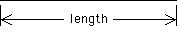
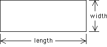
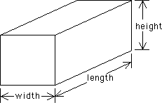

| Common Dimensions |
| People talk about the dimension of objects in nature which are all around us. You have probably heard of objects referred to as being one-dimensional, two-dimensional, or three-dimensional. What is meant by this? |
| If a shape is one-dimensional then it can be measured in only one direction. A line segment is an example of such a shape. We can measure the length of a line segment but not its width. When we draw a line segment it appears to have a width determined by the thickness of the pencil. But, mathematically we say it has no width, only a length. For this reason, we agree the line segment has one dimension which we call length. |
|  |
| A line segment is one-dimensional |
| Two-dimensional objects can be measured in two different directions. We talk about them having a length and a width. Notice that length and width are perpendicular to each other. A rectangle is an example of a two-dimensional object; it has both a length and a width. |
|  |
| A rectangle is two-dimensional |
| Next we look at a box. A box is pictured below. |
|  |
| A box is three-dimensional |
| Notice it has rectangular sides. Sometimes some of the rectangles can be squares. If all the rectangles are squares, the box is a cube. With boxes we can measure the length, width, and height. Notice that the length and width are perpendicular, the width and height are perpendicular, and the length and height are perpendicular. These three measures are said to be mutually perpendicular. Because we can measure the box in three different mutually perpendicular directions, the box is three-dimensional. |
| There is one more common object whose dimension we should discuss. This is a point. A point has no length, no width, and no height. It cannot be measured in any direction. We say a point is of dimension zero. |
| A point is zero-dimensional |
Return to Dimensions and Logarithms.